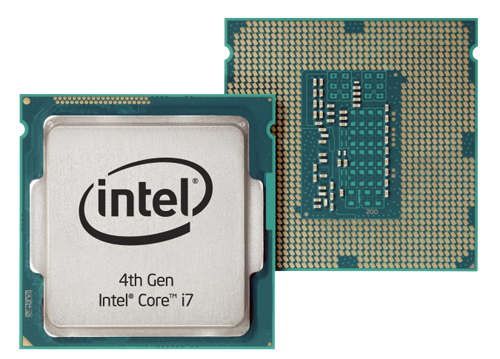

| İşlemci |
| İşlemci Nedir? |
Türkçesi merkezi işlem birimi(Central Processing Unit) olarak çevrilen ve kısaltması CPU olan işlemciler, 1970'li yıllarda
ilk defa hayatımıza girdiğinde binlerce transistöre ev sahipliği yaparken şu an milyonlarca transistörün silikon bir çip üzerinde birleştirilmesi ile oluşur.
Mantıksal ve aritmetik işlem yapma yeteneğine sahip olan işlemciler, kısaca bilgisayarın verilerini işleyen ve yazılım
komutlarını gerçekleştiren bir bölüm olarak ifade edilmektedir.
|
| İşlemci bilgisayarda ne işe yarar? |
İşlemci, bilgisayar bilimlerinin çalışmasını ve veri akışını kontrol etmekte olan elektronik aygılardır. Bilgisayarın beyni olan işlemci, gerekli işlemlerin
gerçekleştirilmesinde öncü olmaktadır. Bilgisayarda yapılan en ufak bir işlem direkt işlemci tarafından yürütülür.
|
| İşlemci nasıl geliştirildi? |
İlk işlemci Intel tarafından 1970'li yıllarda geliştirildi. Intel, yarı iletken sistemler üzerinde çalışan bir firma olara kuruldu ve işlemci de
temelde bu özelliğe sahip olarak icat edildi. Andy Grove, Robert Noyce ve Moore yasası olarak bilinen teorinin mucidi olan Gordon Earle Moore tarafından 1968 yılında kurulan Intel, günümüzde de
CPU piyasasının %80’ine sahiptir.Intel’in ilk işlemcisi olan 4004, 1971 yılında geliştirilerek piyasaya sürüldü. 4004, silikon chip üzerine yerleştirilmiş bir transistörden ibaretti ve tek yongalı
olarak üretilmişti. Ancak bu ürün Intel’e beklenen başarıyı getirmedi. Intel daha sonra 8080 mimarisini ürünleri için benimseyerek bu mimariye sahip ürünleri piyasaya sürmeye başladı.
Günümüzde bilgisayarların temel işlemci yapısını oluşturan 8086 mimarisi de 1979 yılında Intel ve IBM firmalarının işbirliği ile geliştirildi.
|
| İşlemci neye göre seçilir? |
İşlemci seçiminde en önemli faktörler:Çekirdek sayısıİş parçacığı sayısıİşlemci temel frekansıMaksimum turbo frekansıÖnbellekVeri yolu hızı |
| İşlemci Çeşitleri |
Slot tipi işlemci: Kasanın üzerine monte edilirler. Dikdörtgen bir kart şeklinde işlemci modelidir. Kimi işlemci bileşenleri kart üzerindedir. Kartın alt kısmında bağlantı noktaları ile ana karta bağlanır.
İşlemcinin korunması için dış kılıfı vardır. yan yüzeylerine soğutucu takılmaktadır. Slot işlemcilerin üretimi durdurulmuştur. Soket tipi işlemci: Kare şeklinde üretilmiş işlemci modelidir. Üst yüzeyinde marka ve model isimleri bulunur. Alt yüzeyinde ise
işlemcinin türüne göre çok sayıda pin veya iletim noktası bulunur. Takıldıkları anakarta bir mandal/kilit yardımıile tutturulurlar. < |